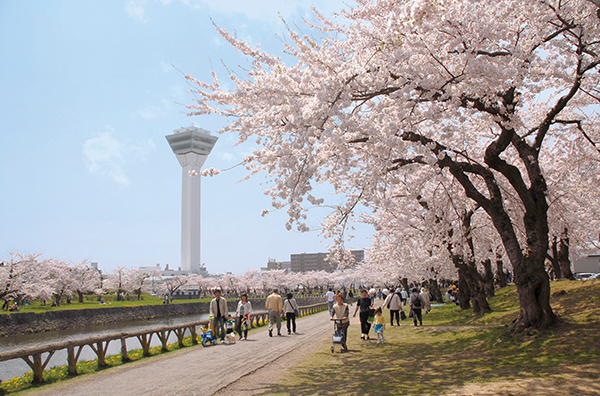
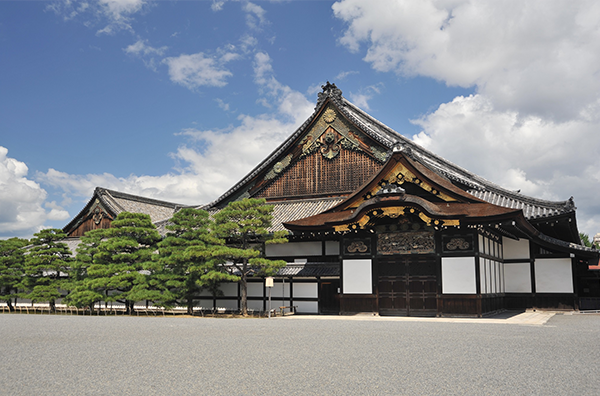

プロジェクトイベント内容について
- 特別な「お～いお茶」配布
- 「日本文化」を“未来”へつなげる架け橋として、旬の縁起物である“新茶”を使用した、イベント限定の特別な「お～いお茶」をお配りいたします。
- お茶の振る舞い
- 地域の文化と共に日本を味覚で感じていただけるよう、伊藤園ティーテイスター※がいれたお茶を振る舞います。※ティーテイスターとは… 伊藤園グループ社員がお茶に関する高い知識を持ち、社内外にお茶の啓発活動が行なえるよう1994年より運営している厚生労働省に認定の社内資格制度です。
- フォトブース
- ご来場者様の記念となるよう、会場ごとにデザインした特別なフォトブースを設置します。
※イベント内容は会場により異なる場合がございます。
※イベント内容は会場により異なる場合がございます。
イベント会場
5月1日（水）北海道
五稜郭

新時代の幕開けを、桜とともに祝う
函館戦争終結から150周年。前時代が終焉し、新時代の幕開けとなった舞台である五稜郭にて、
日本の美を満開に映し出した桜の季節に、日本の文化・美を眺め、
日本文化のお茶をじっくりご堪能いただきながら、新時代を祝福いたします。
| 会場名 | 五稜郭 |
|---|---|
| 実施日時 | 2019年5月1日(水) 10:30～16:00 |
| 配布場所 | 五稜郭タワー横お花見エリア |
| 会場住所 | 北海道函館市五稜郭町43-9 |
5月16日（木）熊本県
熊本城
新時代へつなぐ復興支援
2016年に発生した、熊本地震で苦難を強いられた熊本城。
日本全国からの支援を糧に一歩一歩復興の駒を進めています。
着実に前進する熊本城の雄姿を、改めて日本全国へ伝えることで、熊本の復興支援を応援いたします。
| 会場名 | 熊本城 |
|---|---|
| 実施日時 | 2019年5月16日(木) 10:30～16:00 |
| 配布場所 | 城彩苑入り口前 |
| 会場住所 | 熊本市中央区二の丸1番1－1号 |
5月21日（火）京都府
二条城

時代の転換を感じ、未来への希望を抱く
徳川15代将軍慶喜公が、時代の転換を図るために大政奉還を行った日本の歴史の舞台。
当日は、五月の淡い緑とお茶を嗜んでいただき、世界各国の人々が交わる京都にて、
普遍的な日本の文化と、新時代の日本の姿を感じていただきます。
| 会場名 | 二条城 |
|---|---|
| 実施日時 | 2019年5月21日(火) 10:30～16:00 |
| 配布場所 | 通常非公開二の丸御殿前庭内 |
| 会場住所 | 京都府京都市中京区二条城町541 |
5月28日（火）広島県
宮島

世界遺産を未来へ! 宮島美化活動
日本を代表する世界遺産・宮島。当日は、その宮島を守る活動の一環として、
ゴミ袋を参加者のみなさまへお渡しし、美化活動にご参加いただいた方へ、
プロジェクト限定「お～いお茶」のお渡しや、お茶の振る舞いなどを実施いたします。
| 会場名 | 宮島 |
|---|---|
| 実施日時 | 2019年5月28日(火) 10:00 ～16:00 |
| 配布場所 | 宮島桟橋横広場 |
| 会場住所 | 広島県廿日市市宮島町厳島 |
5月28日（火）東京都
ＪＰタワー KITTE
丸の内
日本の文化とお茶の魅力を
未来へつなげよう！
新時代「令和」に沸く１ヵ月の最終集結地は、まさにビジネスと観光を発信する東京・丸の内で開催します。
伊藤園がこれまでに実施した活動を紹介すると共に、新時代の「令和」とともに
「日本の文化を未来につなげていく」というメッセージを日本全国へ発信いたします。
| 会場名 | ＪＰタワー KITTE丸の内 |
|---|---|
| 実施日時 | 2019年5月28日（火）11:30～17:00 |
| 配布場所 | ＪＰタワー KITTE丸の内 建物内 |
| 会場住所 | 東京都千代田区丸の内2丁目7−2 |
- ※イベント当日、直前に予告なくイベント内容を変更する可能性がございます。
- ※雨天（荒天）の場合、中止になる場合もございます。
- ※実施時間は変更となる場合もございます。